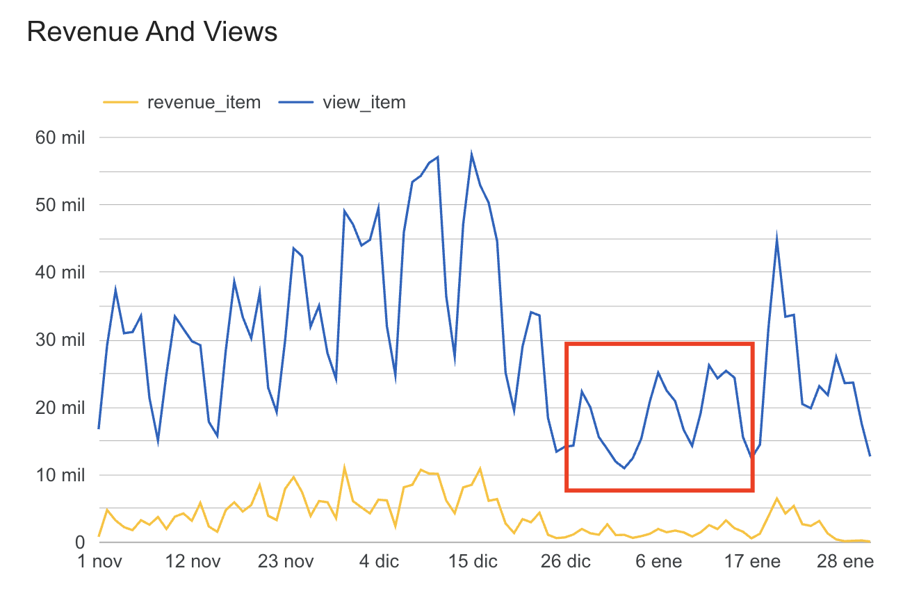
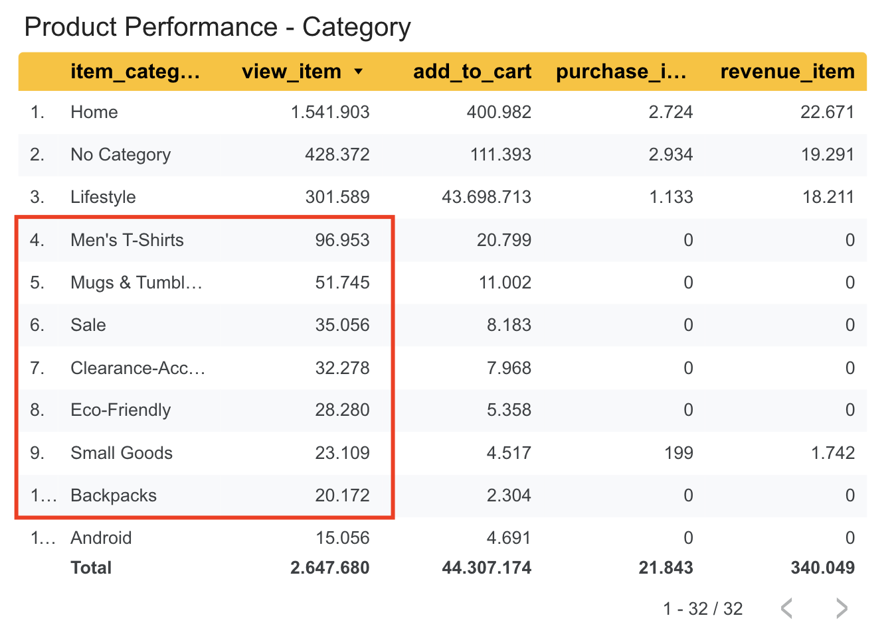
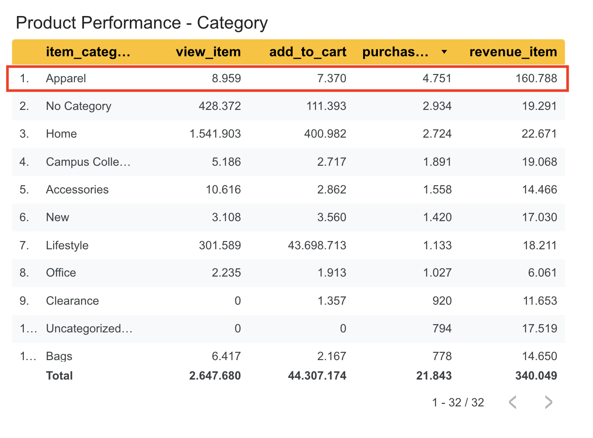
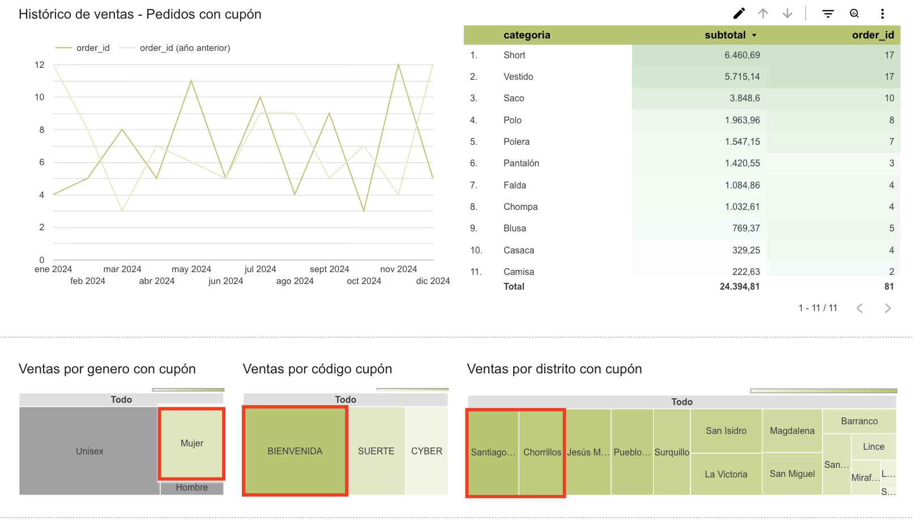
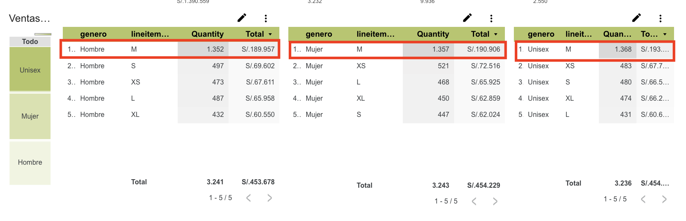
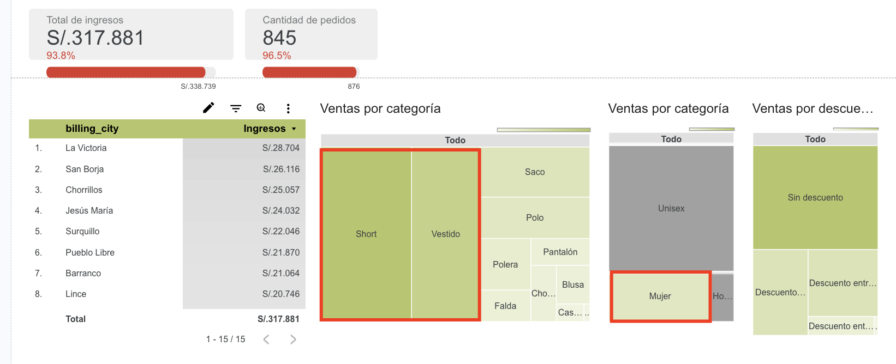

Ecommerce
Performance
Insights
Análisis de rendimiento de ecommerce desde dos perspectivas: comportamiento de usuarios (GA4) y rendimiento comercial (Shopify).

Contexto del proyecto
Análisis de datos aplicado a ecommerce desde dos perspectivas complementarias.
Descripción del proyecto
Proyecto de análisis de datos enfocado en optimizar el rendimiento de negocios ecommerce mediante el análisis de dos perspectivas independientes:
Este proyecto refleja el trabajo real realizado en mi experiencia profesional: analizar un ecommerce tanto a nivel de comportamiento de usuarios (GA4) como a nivel de ventas transaccionales (Shopify), con el objetivo de convertir datos en decisiones accionables.
Planteamiento del problema
Preguntas de investigación que guían el análisis de cada módulo.
Analizar la relación entre vistas de producto y ventas/revenue generado para identificar productos con alta exposición pero baja conversión.
Identificar patrones comerciales que afectan la rentabilidad: descuentos, uso de cupones, preferencias de tallas, categorías y distribución geográfica.
Objetivos generales del proyecto
Fuentes de datos utilizadas
Dos fuentes independientes que alimentan cada módulo de análisis.
Dataset de muestra proporcionado por Google con eventos de comportamiento de usuarios en un ecommerce.
Datos simulados realistas de una tienda ficticia en Shopify. El análisis es replicable a cualquier tienda con la misma estructura de exportación.
Herramientas y tecnologías utilizadas
Pipelines independientes para cada módulo de análisis.
Tecnologías utilizadas
Product
Performance
Insights
Se analiza la relación entre vistas de producto y ventas/revenue generado, evaluando eventos de conversión registrados en GA4, desde las vistas hasta las compras, a través del dataset público de Google en BigQuery.
De eventos anidados a métricas accionables
Transformación de la tabla GA4 en BigQuery.
items[]Consulta SQL principal — GA4 BigQuery
Pivoteo de eventos a métricas por producto y fecha.
SELECT
-- Fecha del evento (de YYYYMMDD a DATE)
PARSE_DATE('%Y%m%d', event_date) AS date,
items.item_id AS item_id,
-- Embudo de conversión: eventos → columnas métricas
SUM(CASE WHEN event_name = 'view_item'
THEN IFNULL(items.quantity, 1) ELSE 0 END) AS view_item,
SUM(CASE WHEN event_name = 'add_to_cart'
THEN IFNULL(items.quantity, 1) ELSE 0 END) AS add_to_cart,
SUM(CASE WHEN event_name = 'begin_checkout'
THEN IFNULL(items.quantity, 1) ELSE 0 END) AS begin_checkout,
SUM(CASE WHEN event_name = 'purchase'
THEN IFNULL(items.quantity, 1) ELSE 0 END) AS purchase_item,
SUM(CASE WHEN event_name = 'purchase'
THEN items.item_revenue ELSE 0 END) AS revenue_item
FROM
`bigquery-public-data.ga4_obfuscated_sample_ecommerce.events_*`,
UNNEST(items) AS items
WHERE
REGEXP_EXTRACT(_TABLE_SUFFIX, r"[0-9]+")
BETWEEN FORMAT_DATE("%Y%m%d", "2020-11-01")
AND FORMAT_DATE("%Y%m%d", CURRENT_DATE())
AND items.item_id <> '(not set)'
GROUP BY
PARSE_DATE('%Y%m%d', event_date),
item_idHallazgos clave
Tres patrones críticos identificados en el comportamiento de productos.

26 dic – 17 ene: pico de tráfico sin conversión proporcional en ventas.

Men's T-Shirts, Mugs, Sale — top 10 en vistas con cero ingresos.

Apparel lidera en revenue pero tiene baja visibilidad — alta oportunidad.
Acciones recomendadas basadas en datos
Optimización de inversión publicitaria y estrategia de productos.
Reducir presupuesto en categorías con tráfico alto pero cero revenue (Men's T-Shirts, Mugs, Sale, Clearance).
Apparel lidera en revenue pero tiene baja visibilidad. Alta oportunidad de crecimiento aumentando su exposición.
Investigar causa del spike de tráfico sin conversión (26 dic - 17 ene). Posibles causas: productos agotados, problemas de checkout, audiencia incorrecta.
Funnel de conversión, análisis de categorías y comparativas de vistas vs. revenue.
Ver dashboard en línea →
Ecommerce
Analytics
Comercial
Datos simulados realistas de una tienda Shopify. El análisis es replicable a cualquier tienda con la misma estructura de exportación de pedidos. Se exploran 6 dimensiones comerciales: ventas YoY, descuentos, categorías, cupones, tallas y geografía.
Flujo de transformación de datos
Del CSV de Shopify a tablas analíticas en BigQuery.
Propósito: Analizar órdenes completas (1 fila = 1 orden) con información de cliente, cupones, ciudad y totales.
Propósito: Analizar productos dentro de cada orden (1 fila = 1 producto) con tallas, descuentos, categorías y género. Preparado para futura conexión con API.
Consulta SQL — Items procesados
Extracción y clasificación de productos, tallas, género y descuentos.
SELECT
DATE(`Created at`) AS date,
Name AS order_id,
-- Extrae nombre del producto (todo antes del primer guión)
REGEXP_EXTRACT(`Lineitem name`, r'^(.*?) -') AS lineitem_name,
-- Extrae talla (último segmento en MAYÚSCULAS)
REGEXP_EXTRACT(`Lineitem name`, r' - ([A-Z]+)$') AS lineitem_variant,
-- Clasifica género desde el nombre del artículo
CASE
WHEN LOWER(`Lineitem name`) LIKE '%hombre%' THEN 'Hombre'
WHEN LOWER(`Lineitem name`) LIKE '%mujer%' THEN 'Mujer'
ELSE 'Unisex'
END AS genero,
-- Categoría: primera palabra del nombre
REGEXP_EXTRACT(`Lineitem name`, r'^([^\s]+)') AS categoria,
ROUND(`Lineitem price`, 2) AS lineitem_price,
COALESCE(ROUND(`Lineitem compare at price` - `Lineitem price`), 0) AS descuento,
-- Clasifica el % de descuento en 8 rangos
CASE
WHEN (`Lineitem compare at price`-`Lineitem price`)
/`Lineitem compare at price`*100 > 69 THEN 'Descuento mayor a 70%'
WHEN (`Lineitem compare at price`-`Lineitem price`)
/`Lineitem compare at price`*100 > 49 THEN 'Descuento entre 50% y 70%'
WHEN (`Lineitem compare at price`-`Lineitem price`)
/`Lineitem compare at price`*100 > 29 THEN 'Descuento entre 30% y 50%'
WHEN (`Lineitem compare at price`-`Lineitem price`)
/`Lineitem compare at price`*100 > 9 THEN 'Descuento entre 10% y 30%'
ELSE 'Sin descuento'
END AS range_discount
FROM `datablog-datasets-360.shopify.shopify_orders`Patrones comerciales identificados
Insights desde los datos de órdenes de Shopify.

Cupón BIENVENIDA lidera entre mujeres — concentrado en Surco y Chorrillos.

Talla M concentra el mayor volumen en todos los géneros — es la talla crítica.

El negocio no depende de descuentos — fuerte demanda natural y margen para optimizar.
Acciones recomendadas basadas en datos
Optimización de cupones, inventario y estrategia promocional.
Cupón BIENVENIDA funciona mejor en mujeres + Surco/Chorrillos. Crear cupones específicos por género y zona geográfica.
Talla M es crítica en todos los géneros. Asegurar stock prioritario para evitar quiebres.
Desde julio 2024 hay tendencia a la baja en productos con descuento. Investigar: cambios en estrategia, competencia, estacionalidad.
El negocio NO depende de descuentos para vender. Oportunidad de mejorar márgenes reduciendo promociones excesivas.
Descuentos, categorías, cupones, tallas y geografía con filtros dinámicos.
Ver dashboard en línea →Próximos pasos y evolución
El proyecto no termina aquí — mejoras técnicas y nuevas capacidades planeadas.
Mejoras técnicas planeadas
🔜 Próximo: Conexión directa con API REST de Shopify
🔜 Próximo: Implementar CURRENT_DATE() para actualización diaria automática
Nuevas capacidades de análisis
Conclusiones y próximos pasos
Impacto esperado